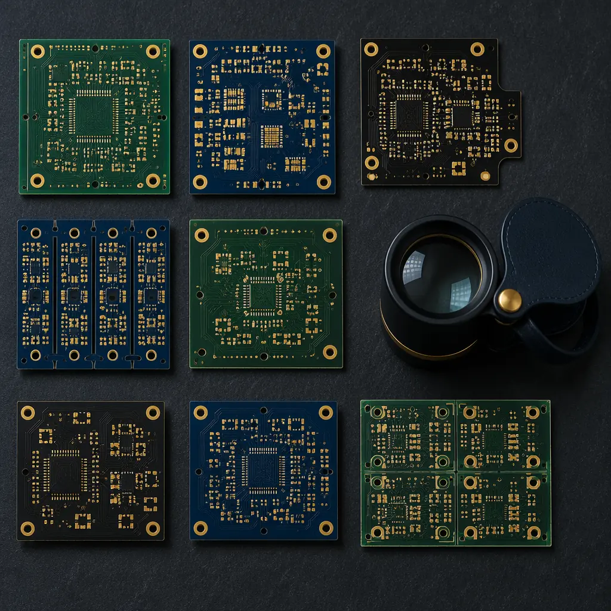

Most procurement teams source PCB suppliers the same way they did in 2015: send an RFQ to five shops, compare the price columns, pick the cheapest two, and call it a day. That approach works when you're buying commodity 2-layer boards with a 2-week lead time and zero regulatory exposure. It stops working the moment your PCB carries an automotive PPAP requirement, an IPC Class 3 reliability spec, or a supply chain that crosses a tariff boundary. A structured RFP — properly scoped, scored, and audited — is the most cost-effective decision a procurement manager can make in PCB sourcing. The difference between a well-run RFP and a price-shopping exercise is typically 15–25% in total cost of ownership, measured over a 3-year sourcing window.
This guide is the framework we've seen work across hundreds of sourcing events at Huaxing PCBA — a Shenzhen-based manufacturer operating 8 SMT lines across 80,000㎡ of certified production floor, serving OEM procurement teams in automotive, medical, industrial, and telecom verticals under ISO 9001 and IATF 16949 quality systems. Every recommendation below has been tested against the reality of what actually distinguishes a reliable PCB supplier from one that looks good on a capability matrix but falls apart at first article inspection.

Why an RFP Beats RFQs for PCB Sourcing
An RFQ asks one question: "What's your price?" An RFP asks a dozen questions — and the answers to the other eleven are what determine whether that attractive unit price actually translates to delivered, conforming boards on your production schedule. The procurement teams that skip the RFP process typically pay for it in three predictable ways:
Price-First Selection Hides Quality Costs Until IQC
A PCB that costs $3.20 per unit but generates a 4% incoming rejection rate at IQC — requiring re-inspection, MRB processing, and supplier corrective action — has an effective cost closer to $4.10 when you load the hidden quality costs. An RFP surfaces the supplier's quality systems, process capability data, and first-pass yield history before you award the business. That information lets you model true cost of quality into your sourcing decision, not discover it after the first production lot fails inspection. For the engineering details behind quality evaluation, see our PCB supplier audit checklist.
RFQs Signal "I'm Buying on Price" — and Suppliers Respond Accordingly
When a supplier receives a bare RFQ with no technical questionnaire, no quality system requirements, and no volume forecast, they price accordingly: low enough to win, high enough to not lose money on the first order, and with a margin structure that assumes zero investment in process optimization for your program. An RFP signals that you're running a structured sourcing process — and good suppliers respond with detailed technical proposals, process capability commitments, and pricing that reflects the true economics of your program rather than a one-shot transactional quote.
RFQs Skip Compliance — and Regulated Industries Can't Afford That
An automotive Tier-1 buying PCBs for an ECU needs IATF 16949, PPAP Level 3 documentation, IMDS material declarations, and a supplier quality manual that meets customer-specific requirements. A medical device OEM needs ISO 13485, process validation per FDA 21 CFR Part 820, and full material traceability. An RFQ doesn't surface whether a supplier can deliver any of these. An RFP makes them line-item requirements with pass/fail criteria. For a deep dive on certification requirements by industry, read our PCB supplier quality scorecard guide.
Key Takeaway: An RFQ tells you who's cheapest. An RFP tells you who's capable. In PCB sourcing, capability risk — not price — is what causes line-down events. The RFP process costs 3–6 weeks of procurement calendar time. A single production line stoppage caused by a quality escape from an under-qualified supplier costs more than that in the first 48 hours.
Step 1: Define Your PCB Requirements Document
The most common RFP failure mode is starting before the requirements are complete. A requirements document that says "8-layer FR-4, ENIG finish, IPC Class 2" is about 20% of what a PCB supplier actually needs to produce a meaningful proposal. The remaining 80% is where the cost drivers, quality risks, and sourcing leverage live. Every RFP should start with a requirements document that covers five dimensions:
Technical Specifications — Beyond Layer Count and Material
Include: finished board thickness with tolerance, copper weight per layer (inner and outer), minimum trace width/spacing, minimum annular ring, aspect ratio (board thickness ÷ smallest drill diameter), impedance control requirements (±10% or ±5%), surface finish (ENIG thickness spec, not just "ENIG"), solder mask type and color, legend/silkscreen requirements, and any special processes (edge plating, castellated holes, controlled-depth drilling, press-fit hole tolerance). A complete technical spec lets suppliers identify process capability gaps before they quote — which is exactly what you want. A supplier who says "we can't hold that annular ring tolerance" during the RFP phase saves you six months of quality issues. One who discovers it during production creates a crisis.
Quality Standards & Certification Requirements
Specify: IPC class (2 or 3), acceptance standard (IPC-A-600 class), any industry-specific certifications required (IATF 16949, ISO 13485, AS9100, UL listing), PPAP level if automotive (Level 3 vs. Level 4 changes the supplier's documentation burden significantly), first article inspection requirements (AS9102 for aerospace, or your own FAI template), and reliability testing expectations (IST, thermal cycling, CAF testing — and whether you expect the supplier to perform these in-house or at an external lab). For a complete breakdown of quality evaluation criteria, see our supplier quality scorecard methodology.
Volume Forecast & Demand Pattern
A single annual volume number — "50,000 units/year" — hides the demand pattern that determines whether a supplier can actually serve your program profitably. Break it down: annual volume, monthly run rate, lot size (every supplier has a minimum production quantity per part number), seasonality (is Q4 40% of annual volume?), forecast accuracy (is your forecast ±10% or ±40%?), and growth trajectory (are you scaling from 50K to 200K over 24 months?). Suppliers price differently for steady-state programs versus lumpy demand — and a supplier who quotes based on steady 5K/month will struggle if your real pattern is 15K in November and zero in December. Be honest in the RFP. Sandbagging your volume to get lower pricing backfires when the supplier can't ramp to your actual demand.
Delivery & Logistics Requirements
Specify: required lead time (and whether it's from PO issuance or Gerber approval), delivery terms (FOB Shenzhen, CIF your port, DDP your facility), packaging requirements (vacuum-sealed with desiccant and HIC card per IPC-1601 for bare boards, ESD-safe for assembled boards), shipping method (air freight, sea freight, courier), and any customer-specific labeling or barcoding requirements. These details seem minor but they are the source of 30–40% of first-order friction. A supplier who assumes FOB Shenzhen when you expected DDP your facility has just created a surprise freight bill that wipes out their price advantage.
Compliance & Regulatory Needs
List: RoHS/REACH (standard for most markets, but some industrial applications still use leaded finishes — specify explicitly), conflict minerals reporting (CMRT template required?), any customer-specific compliance requirements (automotive OEMs often require IMDS submissions, medical customers may require biocompatibility data), and country-of-origin documentation expectations. If your end customer requires full material provenance for tariff or regulatory reasons, state it upfront — it changes the supplier's documentation burden and may disqualify some candidates. Our supply chain risk management guide covers compliance documentation in depth.
Procurement Tip: Package your requirements document as an appendix to the RFP, not the body. The RFP body asks the supplier to respond to your process, quality, commercial, and reference questions. The appendix gives them the technical data they need to formulate those responses. Separating the two prevents the classic RFP mistake of burying commercial questions inside a 40-page technical spec that nobody on the supplier's commercial team reads carefully.
Step 2: Build Your Supplier Longlist
A longlist is not a shortlist. A longlist is every supplier who might be capable — typically 15–30 names — from which you'll select 5–8 to receive the full RFP. The quality of your shortlist depends entirely on the quality of your longlisting process. Relying on the same three suppliers you've always used, or the first five names that appear in a Google search for "PCB manufacturer China," is not a longlisting process — it's a habit dressed up as procurement strategy.
Where to Find PCB Suppliers Beyond Your Existing Vendor List
Start with industry directories: IPC's member directory (filtered by capability and certification), the HKPCA (Hong Kong Printed Circuit Association) member list for China-based suppliers, and industry trade show exhibitor lists (Productronica, electronica, CPCA Show). Add supplier referrals from your component distributors — they see PCB supplier performance data across hundreds of customers and often have insight into which fabs are investing in capability versus coasting on legacy business. Cross-reference with online B2B platforms (Alibaba, Global Sources) but treat those as discovery tools, not qualification tools — any supplier that only exists on a B2B platform with no industry association presence, no trade show history, and no customer references you can call directly is not ready for your RFP.
Minimum Qualification Criteria — Your First Filter
Before a supplier receives your RFP, they should pass a minimum bar: (a) required certifications held and current (IATF 16949, ISO 13485, or whatever your industry demands — not "working toward," not "plan to obtain"), (b) minimum annual revenue threshold (typically $10M–$20M for a supplier you'll depend on for production volumes — smaller shops can be excellent but carry concentration risk if your program is 30% of their revenue), (c) at least 3 reference customers in your industry vertical with programs of comparable complexity, and (d) export experience to your destination country — a supplier who has never shipped to the US or EU will stumble on customs documentation, packaging standards, and customer communication norms regardless of their technical capability.
Capability Pre-Screening: 15 Minutes That Saves 3 Weeks
Send a 5-question pre-screening form to your longlist before the full RFP. Ask: (1) maximum layer count you manufacture in production volume (not prototype), (2) minimum trace/space capability in production (not lab capability), (3) certifications held with expiry dates, (4) top three customer industries by revenue, and (5) current capacity utilization percentage. The answers eliminate 40–60% of the longlist before you invest in a full RFP evaluation. Suppliers who can't answer these five questions in 48 hours are signaling that they can't respond to an RFP either. Move them to the bottom of the list.
Step 3: Structure Your RFP Document
A PCB supplier RFP is not a form email with Gerber files attached. It's a structured document that forces suppliers to respond to the same questions in the same format — which is what makes apples-to-apples comparison possible. The RFP sections below form the standard structure we recommend, adaptable to your specific program requirements:
| RFP Section | What to Include | Why It Matters | Supplier Response Format |
|---|---|---|---|
| 1. Company Overview | Year founded, ownership structure, total revenue, employee count, factory size, key management bios | Establishes scale, stability, and whether the supplier is large enough to absorb your program without concentration risk | 2-page executive summary + org chart |
| 2. Technical Questionnaire | Detailed capability matrix: layer count, materials, surface finishes, HDI, rigid-flex, impedance control tolerances, minimum drill size, aspect ratio limits | Surfaces capability gaps against your requirements document before quoting begins | Completed capability matrix with production vs. prototype capability noted |
| 3. Quality Systems | Certifications (with expiry), quality KPIs (first-pass yield, customer return rate, scrap rate), process control methods (SPC, Cpk targets), inspection equipment list, lab capabilities | Quantifies the supplier's quality maturity — the single strongest predictor of long-term performance | KPI data for last 12 months, certification copies, quality manual |
| 4. Commercial Terms | Pricing structure (per-unit, volume breaks, NRE breakdown), payment terms, currency, Incoterms, tooling ownership, EOL/last-time-buy policy, warranty terms, liability caps | Ensures the commercial framework is established before negotiation, preventing surprises at contract stage | Pricing schedule, payment term proposal, standard T&Cs |
| 5. References | Request 3–5 customer references with contact details, preferably in your industry vertical and geography | External validation of claims made in sections 1–4; a supplier unwilling to provide references is a red flag | Reference contact sheet with program description and duration |
The RFP should also include: a response deadline (typically 2–3 weeks from issuance), instructions for submitting clarifications during the response period, and a clear statement that incomplete responses will not be evaluated. This last point is important — if you evaluate incomplete responses alongside complete ones, you've just signaled that the RFP is optional, and suppliers will treat it accordingly in future sourcing events.
Best Practice: Hold a 30-minute kickoff call with each shortlisted supplier before the RFP response deadline. Walk through the requirements document, explain the evaluation criteria, and answer questions. Suppliers who participate in the kickoff call submit significantly higher-quality proposals — they understand the context behind the requirements rather than guessing. And the quality of their questions during that call tells you as much about their capability as their written response will.
Step 4: Evaluation Criteria & Weighted Scoring
A weighted scoring model transforms RFP evaluation from "whichever proposal feels most convincing" into a defensible, auditable sourcing decision. The key is setting the weights before you read the proposals — not adjusting them afterward to justify the supplier you already prefer. The weight distribution below reflects what we've observed works for production PCB sourcing programs where quality and delivery risk carry real business consequences:
| Evaluation Category | Weight | What You're Scoring | Data Source |
|---|---|---|---|
| Technical Capability | 30% | Capability matrix match to your requirements, process engineering depth, equipment capability and age, in-house vs. outsourced processes | RFP technical questionnaire, capability matrix |
| Quality Systems | 25% | Certifications, first-pass yield data, customer return rate, SPC maturity, lab and inspection capability, corrective action process robustness | RFP quality section, certification records, KPI submissions |
| Commercial Terms | 20% | Total cost of ownership (not just unit price — include tooling, freight, payment terms impact), volume break structure, payment terms flexibility, warranty | RFP commercial response, pricing schedule |
| Delivery & Logistics | 15% | Lead time commitment, on-time delivery history, logistics capability (export experience, customs expertise), packaging quality, communication responsiveness during RFP process | RFP logistics section, OTD data, reference calls |
| References & Reputation | 10% | Reference call findings, industry reputation, length and stability of key customer relationships, pattern of issues across multiple references (or absence thereof) | Reference calls, industry network inquiries |
Score each category on a 1–5 scale where 5 = exceeds requirements, 3 = meets requirements, and 1 = does not meet minimum requirements. Any supplier scoring 1 in any category should be disqualified regardless of their composite score — a perfect commercial score doesn't compensate for failing to meet minimum quality requirements. The composite score is the weighted sum, and suppliers below a 3.0 composite should not advance to the site visit stage without a compelling justification documented in the sourcing file.
Assign at least two evaluators per category — one from procurement, one from engineering or quality — and calibrate scores in a structured review session before finalizing. Independent scoring followed by calibration eliminates the halo effect where a supplier with excellent references gets unconsciously scored higher on technical capability than their data supports. For detailed quality scoring methodology, our supplier quality scorecard guide provides a complete framework.
Step 5: Site Visits & Sample Orders
An RFP response is a document. A site visit is reality. The two diverge more often than procurement teams would like to admit — and the divergence is always in one direction. No supplier's factory looks better in person than it does on paper. The purpose of the site visit is to validate what the RFP claimed and to observe what the RFP didn't ask about.
What to Audit During the Site Visit — Beyond the Conference Room
Walk the production floor during operating hours. Count how many lines are running. Check whether the equipment list matches what's actually on the floor — equipment that appears in the RFP but not on the floor (or covered in dust, or disconnected) is a red flag. Inspect the chemical lab and process control stations: are control charts current (dated within the last week), or does the last data point date from three months ago? Look at the incoming inspection area: is laminate stored in climate-controlled conditions? Are copper foils stored with oxidation protection? Walk through the finished goods area: is packaging consistent with IPC-1601 requirements (vacuum-sealed, desiccant, HIC cards)? A supplier who can't package properly for storage can't package properly for your shipment. For a structured approach, use our 10-point supplier audit checklist as your site visit framework.
The Sample Order: Don't Skip It
A sample order — typically 50–200 units of a representative PCB from your program — serves two purposes. First, it validates that the supplier's production line can produce your board to spec, not just their sales team's capability matrix. Second, it tests the supplier's customer interface: how they handle order acknowledgment, engineering questions, progress communication, packaging, shipping documentation, and invoicing. A supplier that nails the technical spec but can't send a shipping notification without three reminders is going to cause operational headaches at production volumes. Budget $2,000–$5,000 and 4–6 weeks for a proper sample order with first article inspection. For guidance on what to inspect, see our first article inspection guide.
Site Visit Cadence: Two Rounds, Not One
Round one visits the top 2–3 scoring suppliers from the RFP evaluation. These are capability validation visits — does the factory match the RFP? Round two is for the finalist (or top two finalists) and focuses on process-specific deep dives: sit with the CAM engineer who will process your Gerber files, walk the specific production line that will run your boards, review the specific quality control plan for your part number. The difference between a general site visit and a process-specific deep dive is the difference between validating capability and validating commitment. A supplier who assigns a junior CAM engineer to process your 12-layer HDI board during the deep dive is telling you something about how they'll handle your program in production.
Step 6: Contract Negotiation & Award
By this stage, you should have 1–2 finalists who passed RFP evaluation, site visits, and sample orders. Contract negotiation is not about squeezing the last 3% out of the unit price — that approach destroys the supplier relationship before it starts and ensures your program gets minimum-effort service. It's about aligning incentives so the supplier's business interest matches your quality and delivery objectives.
Structure the Contract Around Performance, Not Just Price
A PCB supply agreement should include: quality KPIs with measurement methodology and reporting frequency (first-pass yield, customer return rate, corrective action response time), delivery performance metrics (on-time delivery defined precisely — "OTD" means different things to different suppliers), continuous improvement commitments (annual cost reduction targets, yield improvement targets), and escalation procedures for quality or delivery failures. The contract should also address: tooling ownership (who owns the fixtures, test jigs, and programming developed for your program?), engineering change management (how are process changes communicated and approved?), and termination provisions (notice period, transition support, last-time-buy obligations). For a complete transition framework if you're switching from an incumbent, see our supplier transition guide.
The Award Decision: Document the Rationale
Write a sourcing recommendation memo that captures: the evaluation scores for each finalist, the key differentiators that drove the decision, any risks identified and your mitigation plan, and the commercial terms agreed. This document serves two functions. In the short term, it provides the audit trail your finance and legal teams need to approve the award. In the long term — when someone asks two years later "why did we choose this supplier?" — it provides the answer. Procurement teams that skip this step end up defending sourcing decisions based on memory, and memory is not a defensible procurement process.
Dual Sourcing: Build It Into the Award Strategy
If you have the volume to support it, award the business to your top two finalists — 70–80% to the primary and 20–30% to the secondary — rather than a winner-take-all single award. A dual-award strategy gives you: immediate second-source capability without a separate qualification cycle, real production data from both suppliers (not just paper qualifications), competitive pressure that keeps both suppliers performing, and a business continuity option if the primary supplier has a quality or capacity issue. The secondary's unit price will be higher than the primary's at 20% volume — that's your supply chain insurance premium, and it's cheaper than qualifying a new supplier under crisis conditions. Our dual sourcing strategy guide covers the economics in detail.
Procurement Tip: Negotiate the contract with the primary supplier first — with the secondary supplier waiting as a viable alternative. This is not a bluff — it's a genuine sourcing option, because you've already qualified the secondary and validated their capability. Suppliers who know they're competing for 70% of your volume rather than 100% negotiate differently than suppliers who know they're the only option.
Step 7: Onboarding & Performance Baseline
The RFP process doesn't end at contract award. The first 90 days of production are part of the evaluation process, and they often reveal issues that the RFP, site visit, and sample order didn't surface. The purpose of the onboarding phase is to establish a performance baseline, catch process drift early, and build the operational relationship that sustains the program over years.
Establish the Performance Baseline in the First 3 Production Lots
Track every metric that will matter over the life of the program: actual lead time vs. committed lead time (lot by lot, not averaged — averaging hides the one lot that took 6 weeks), first-pass yield (at the supplier's outgoing inspection), incoming quality at your IQC (defect rate by category), packaging compliance (any deviation from spec?), and communication responsiveness (time to acknowledge a quality issue, time to provide root cause analysis, time to implement corrective action). The first three lots set the pattern for the next 300. If performance on lots 1–3 doesn't meet the KPIs in the contract, address it immediately — the supplier's response to early performance issues is the best predictor of how they'll handle issues two years in. Our quality scorecard framework provides the tracking template.
Quarterly Business Reviews — Start Immediately, Not After a Year
The temptation is to let the supplier "settle in" before starting formal QBRs. That's a mistake — it signals that performance reviews are for problem suppliers, not for normal relationships. Schedule the first QBR at the 90-day mark. Review the performance baseline data from the first three lots, discuss any process improvements the supplier has identified, align on the forecast for the next quarter, and set improvement targets for the KPIs that aren't yet meeting contract thresholds. A supplier who can't produce meaningful KPI data for a 90-day QBR probably isn't measuring what you've contracted them to deliver.
Build the Engineering-to-Engineering Relationship
Procurement owns the commercial relationship, but your engineering team owns the technical relationship — and that's where most long-term supplier value is created or destroyed. Within the first month of production, set up a direct technical call between your PCB design engineer and the supplier's CAM/pre-production engineering team. Let them discuss: DFM feedback on your design (every design has manufacturability improvements the supplier can suggest), impedance modeling assumptions (are they using the same stackup calculator you are?), and test methodology (flying probe coverage vs. fixture test, which nets are critical). Suppliers whose engineering teams communicate directly with your engineering team catch issues before they become quality escapes. Suppliers where all communication flows through a salesperson catch issues after they've shipped. For a deeper look at preventing quality escapes, see our FAI guide.
Summary: The RFP Is Not the End — It's the Beginning of Supplier Management
Running a PCB supplier RFP is a 7-step process — but treating it as a one-time sourcing event is a mistake. The RFP framework establishes the evaluation methodology, the weighted scoring criteria, and the performance baseline that should guide your supplier relationship for the life of the program. The procurement teams that get the most value from their PCB suppliers don't run one RFP every five years. They maintain a living supplier scorecard, revisit their evaluation weights as their program requirements evolve, and have qualified alternatives ready before they need them.
At Huaxing PCBA, we participate in structured RFPs from automotive Tier-1s, medical device OEMs, and industrial equipment manufacturers who demand the level of rigor described in this guide. Our 8 SMT lines, 32-layer PCB capability, and ISO 9001 / IATF 16949 certifications mean we can deliver on the quality, delivery, and compliance requirements your RFP demands — and we welcome the scrutiny because it distinguishes capable suppliers from the rest. Our engineering team provides detailed DFM feedback within 24 hours of Gerber receipt, our quality team maintains Cpk data for every critical process parameter, and our commercial team structures proposals that align with your TCO model rather than a unit-price-only comparison. Start with our supplier audit checklist or assess your supply chain risk profile. Ready to issue an RFP? Contact our commercial team for a capability presentation and preliminary technical review of your requirements.